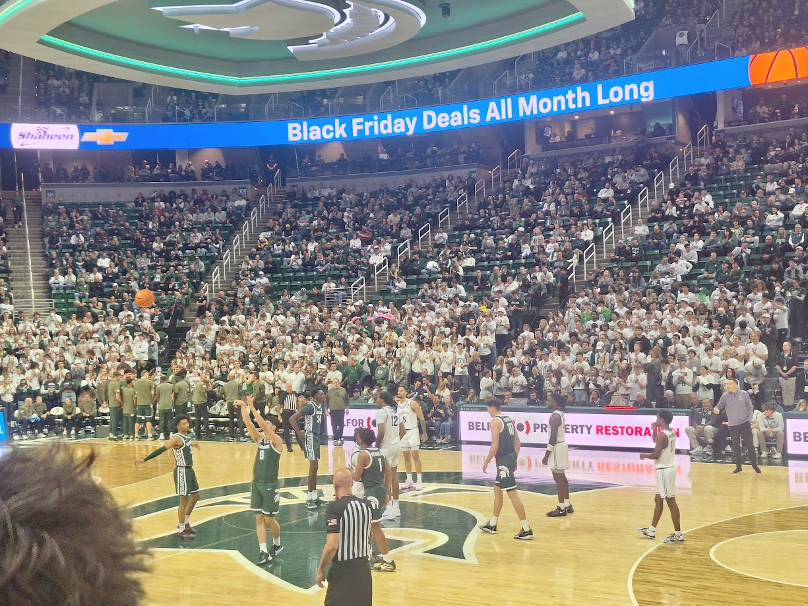

MSU annihilates Nebraska 89-52
Summary
Michigan State was led by Jaden Akins scoring 18 points and Jase Richardson scoring another 16 off the bench. Another 5 players contributed over 6 points playing to the team's identity of a balanced scoring attack. Nebraska was physically dominated as Michigan State held them to 33.3% from the floor and 18.2% from 3. The rebounding margin was 48-19 in favor of MSU.
Rebounding
The biggest key to the game was that the entire team, especially Kohler and Zapala, continued to rebound incredibly. Since the departure of Xavier Tillman in 2020 the Spartans have continuously rebounded the ball offensively and defensively at mediocre clips. This has led to them being vulnerable to losing to bad teams if they are not hitting their shots like on the road against Minnesota and James Madison at home last year. This year Michigan State has a top 40 offensive rebounding rate and the 6th best defensive rebounding rate in the country according to KenPom. This has propelled them to these dominant victories against much less talented teams. The improvement seen with Kohler and Cooper is likely due to the influence of bigs coach Saddi Washington who came over from Michigan after Juwan Howard was fired at the end of 2023-24 season.
3-point shooting
The biggest concern coming out of the Maui Invitational is that Michigan State was one of the 10 worst 3-point shooting teams in the nation by percentage. Last year Michigan State also struggled to hit 3's at the beginning of their non-conference slate, but it improved a lot within conference play, finishing as the 3rd best 3-point shooting team in the conference. Through the first 2 conference games this year MSU is shooting 44.4% from 3, which is 1st in the conference although it is an extremely small sample size. Including out of conference games the Spartans are shooting 27.2% from 3 which leaves that at 341/364 teams.